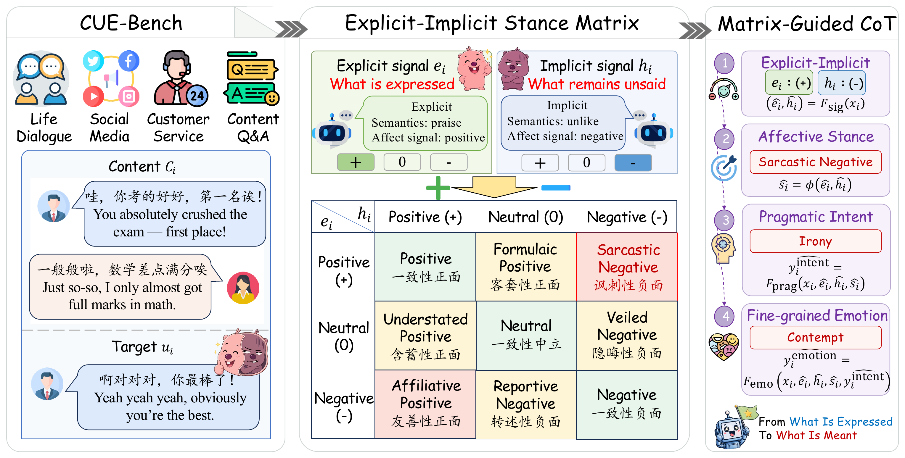
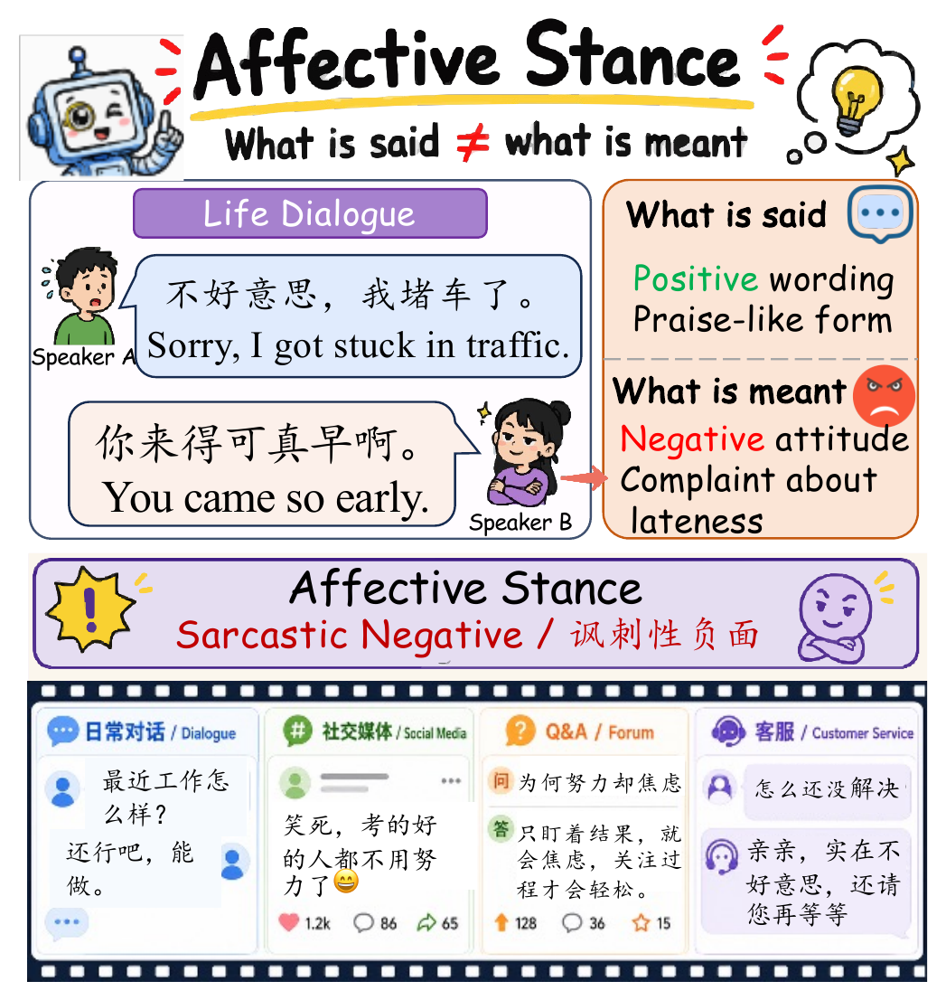

Targets cases where literal wording and intended affect diverge, including irony, politeness, understatement, veiled negativity, and formulaic expression.
EMNLP 2026
Surfacing the Unsaid: CUE-Bench for Affective Stance in Chinese Discourse
A Chinese discourse benchmark for understanding unsaid emotion through the Explicit-Implicit Stance Matrix.
Huazhong University of Science and Technology
*Equal contribution †Corresponding author
*Equal contribution †Corresponding author

CUE-Bench links what is expressed with what remains unsaid. The Explicit-Implicit Stance Matrix maps surface affect and implied affect into nine interpretable Affective Stances, which guide pragmatic intent and fine-grained emotion inference.
Abstract
Emotion understanding in discourse requires reasoning beyond surface sentiment, since speakers often convey affect through indirect, implicit, polite, ironic, or deliberately mismatched expressions. Existing emotion benchmarks mainly annotate surface polarity or final emotion categories, while lacking a structured account of how explicit expression, implicit affect, pragmatic intent, and fine-grained emotion interact.
To address this gap, we introduce CUE-Bench, a Chinese Unsaid Emotion benchmark centered on Affective Stance. CUE-Bench constructs nine human-interpretable affective stances from Explicit-Implicit polarity interaction and further provides intent and fine-grained emotion annotations for structured affective inference.
Highlights
Models affective stance as the interaction between surface expression and implied affect, producing nine interpretable stance categories.
Uses Affective Stance as an intermediate scaffold for pragmatic intent understanding and fine-grained emotion classification.
Explicit-Implicit Stance Matrix
The matrix organizes the relation between surface expression and implicit affect. It is not a replacement for fine-grained emotion labels, but an interpretable scaffold for reasoning from what is expressed to what is meant.
| Explicit \ Implicit | Positive | Neutral | Negative |
|---|---|---|---|
| Positive | Aligned Positive | Formulaic Positive | Sarcastic Negative |
| Neutral | Understated Positive | Neutral | Veiled Negative |
| Negative | Affiliative Positive | Reportive Negative | Aligned Negative |

A simple example of Affective Stance: the same utterance can express one affective signal on the surface while implying another affective meaning in context.
Dataset
CUE-Bench provides multi-level supervision for Chinese discourse emotion understanding, spanning explicit affect, implicit affect, Affective Stance, Pragmatic Intent, and Fine-grained Emotion.
52,882instances in the refined full release
9Affective Stance categories
3connected evaluation tasks
| Release | Description | Samples |
|---|---|---|
| Paper Experimental Split | Train/dev/test split used for the paper experiments. | 47,010 |
| Refined Full Release | Final public release with broader coverage of rare stance phenomena. | 52,882 |
Task Suite
| Task | Target | What It Evaluates |
|---|---|---|
| Affective Stance Recognition | 9 stance labels | Whether models can identify the relation between surface affect and implied affect. |
| Pragmatic Intent Understanding | 8 intent labels | Whether models understand communicative strategies such as irony, politeness, suppression, and resistance. |
| Fine-grained Emotion Classification | 25 emotion labels | Whether models can recover the specific affective state conveyed in context. |
Experimental Results
Across strong LLM baselines, incorporating Affective Stance improves downstream affective inference, especially for pragmatic intent understanding.
| Task | Best Baseline | Matrix-Guided CoT | Overall Gain |
|---|---|---|---|
| Pragmatic Intent Understanding | Direct / Few-shot / CoT | Explicit-Implicit stance guided reasoning | +8.1 percentage points |
| Fine-grained Emotion Classification | Direct / Few-shot / CoT | Explicit-Implicit stance guided reasoning | +3.1 percentage points |
Representative Model Results
| Model | Affective Stance W-F1 | Pragmatic Intent W-F1 | Fine-grained Emotion W-F1 | Average |
|---|---|---|---|---|
| DeepSeek-V4-Flash | 0.527 | 0.465 | 0.327 | 0.402 |
| LLaMA-4-Maverick | 0.511 | 0.452 | 0.331 | 0.393 |
| GLM-5.1 | 0.552 | 0.450 | 0.333 | 0.405 |
Gains summarize improvements over strong prompting baselines in the paper. Full model-level results are reported in the paper.
Usage
Load the Dataset
git clone https://github.com/AI4SS/CUE-Bench.git
cd CUE-BenchRun Evaluation
pip install -r requirements.txt
python code/llm_evaluate.py \
--model gpt-4o-mini \
--task stance \
--method direct \
--shot fewData Format
{
"text": "你可真会安排，周六开会最让人开心了。",
"context": "[工作群聊] 团队连续加班多天，负责人临时通知周六继续开会。",
"explicit_polarity": "Positive",
"implicit_polarity": "Negative",
"affective_stance": "Sarcastic Negative",
"pragmatic_intent": "Irony",
"fine_grained_emotion": "Contempt"
}BibTeX
@misc{zheng2026surfacingunsaidcuebenchaffective,
title = {Surfacing the Unsaid: CUE-Bench for Affective Stance in Chinese Discourse},
author = {Zhenyan Zheng and Yunyao Zhang and Junxi Sheng and Junqing Yu and Zikai Song},
year = {2026},
eprint = {2608.10810},
archivePrefix = {arXiv},
primaryClass = {cs.CL},
url = {https://arxiv.org/abs/2608.10810}
}